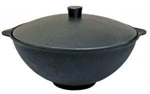

Казаны, мангалы, коптильни
ШАШЛЫК МАШЛЫК - Интернет магазин товаров для дачи и отдыха
Мы рады приветствовать Вас в нашем интернет-магазине, за помощью в выборе товара Вы можете обратиться к нашим консультантам
Казан чугунный 8л

Описание товара:
Казан чугунный чаша азиатская 8л с алюминиевой крышкой производство г. Балезино
Подробное описание товара:
Казан чугунный чаша азиатская объёмом 8 литров с алюминиевой крышкой прекрасно подходит для приготовления блюд на открытом огне или углях. Плоское дно позволяет приготовить плов, как на открытом огне, так и в домашних условиях на электрической или газовой плите.
Характеристики товара:
- Объем: 8 л
- Диаметр казана: 360 мм
- Диаметр основания: 120 мм
- Глубина казана: 160 мм
- Толщина стенки казана: 5 мм
- Наличие крышки: есть
- Материал: Чугун
- Вес: 7 кг
- Наличие товара на складе: Есть
Казаны